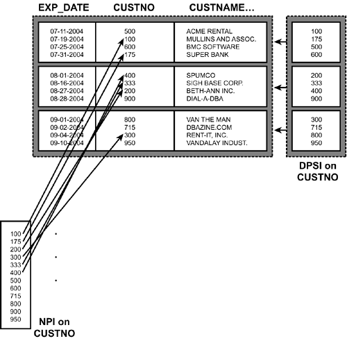

|
|
< Day Day Up > |
|
Creating IndexesA proper indexing strategy can be the most important factor to ensure optimal performance of DB2 applications. However, indexing is most likely improperly implemented at most DB2 sites. This is due to the nature of database development. Database objects typically are created near the beginning of a project—after the logical data model has been transformed into a physical database design, but before any application code or SQL has been written. So the DBA takes an initial best guess at creating some indexes on each table. Of course, indexes are best designed based on how the data will be accessed. Without the SQL, proper indexes cannot be created. Therefore, as the development process progresses an iterative approach is taken to index creation. New indexes are created to support new queries; old indexes are removed if they are not being used. Such an approach is fraught with potential problems, but such is life. Indexes should be created to match the predicates of your most important and frequently executed SQL statements. When DB2 accesses data using an index, it can be much more efficient than scanning an entire table for the row(s) that apply. For example, consider the following SQL statement:
SELECT FIRSTNME, MIDINIT, LASTNAME, WORKDEPT,
PHONENO, SALARY
FROM DSN8810.EMP
WHERE EDLEVEL = 2
AND BONUS > 100.00;
If there are no indexes defined on the EMP table, DB2 will have to search every row of the table, looking for employees with an education level of 2 and a bonus greater than $100.00. But if we define an index on the table—on either or both of the two columns in the predicates—then DB2 can use the index to find the qualifying rows. This should reduce I/O and improve performance. An index on EDLEVEL, BONUS would be the most beneficial for this query. DB2 can match on the equality predicate and scan on the range (>) predicate. So, DB2 can use the index to match the value of EDLEVEL and scan for BONUS values. An index is created using the CREATE INDEX statement, which is similar in several ways to the CREATE TABLESPACE statement. Both require the user to specify storage (USING, PRIQTY, and SECQTY), free space (PCTFREE and FREEPAGE), a buffer pool (BUFFERPOOL), and how to close the underlying data sets (CLOSE). However, there are also many differences. One big difference is that separate CREATE statements are not used to create an index and an index space. An index space is the underlying storage structure for index data and it is automatically created by DB2 whenever an index is created. There can only be one index in an index space. Of course, there are many other differences because indexes are different from table spaces, and serve different data processing needs. In DB2, uniqueness is enforced using an index. You can create a unique index that forces the columns specified for the index to be unique within the table. If you try to INSERT or UPDATE these columns with non-unique values, an error code is returned and the request fails. Creating a unique index is the only way to ensure uniqueness for a column (or columns) in DB2. You can use an index to guide DB2 to control how table space data is physically stored on disk. This is called clustering. A DB2 index is a clustering index if the CLUSTER keyword is specified when the index is created. Clustering causes inserted rows to be stored contiguously in sequence whenever possible. Additionally, when the table space is reorganized the data will be sequenced according to the clustering index. Since there can only be one physical sequence for data on disk, there can only be one clustering index per table. If you do not specify a clustering index DB2 will choose to cluster the data using the oldest existing index. It is wise to explicitly specify a clustering index instead of letting DB2 decide because you will almost always choose better than the (basically random) choice DB2 makes. Indexed columns can be specified as ascending or descending. This is accomplished by specifying either ASC or DESC after each column in the index. Specifying ASC causes index entries to be in ascending order by the column (this is the default). DESC puts the index entries in descending order by the column. Finally, through the use of the DEFINE and DEFER parameters DB2 can delay the creation of the index and its data sets until a later time. Index ConsiderationsBefore creating any indexes, you should analyze your data and consider the following factors:
Remember that indexes are created to enhance performance. Although an index may speed up the performance of a query, each new index will degrade data modification. Keep the following in mind as you create indexes:
NOTE A good rule of thumb for index creation is to keep creating indexes to enhance the performance of your queries until the performance of data modification becomes unacceptable. Then, delete the last index you created. This general approach is best described as creating indexes until it hurts. Indexing Variable ColumnsDB2 V8 offers the capability to direct DB2 as to whether variable columns in an index should be padded. Appropriately enough, a new option, PADDED (or NOT PADDED) can be specified when creating indexes. The specification is made at the index level, so every variable column in the index will be either padded or not padded. When PADDED is specified, DB2 will create the index just as it did prior to V8—by padding all variable columns to their maximum size. When NOT PADDED is specified, DB2 will treat the columns as variable and you will be able to obtain index-only access. The length information will be stored in the index key. NOTE Keep in mind that DB2 cannot perform index-only access using a padded index—even if every required column exists in the index. This is so because the actual length of the VARCHAR column(s) is not stored in a padded index. So, DB2 will have to access the table to retrieve the length from the two-byte column prefix. CAUTION Remember the precaution from Chapter 5, "Data Definition Guidelines," to avoid defaults. Set up the PADIX parameter to create the type of indexes you prefer by default, but when creating indexes be sure to explicitly specify either PADDED or NOT PADDED so that you are assured of creating the type of index you want to create every time. Relying on defaults is lazy and potentially fraught with problems. Indexing and PartitioningThis all changes with DB2 Version 8. To understand partitioning in DB2 V8, first we need to define some terminology: namely, partitioned versus partitioning.
Control of partitioning changes from index-controlled to table-controlled as of DB2 V8. Actually, DB2 V8 supports both types of partitioning, but table-controlled partitioning enables new features not supported under index-controlled partitioning. For example, the ability to easily add or rotate partitions is only supported with table-controlled partitioning. CAUTION DB2 will automatically switch from index-based to table-based partitioning if any of the following operations are performed:
Clustering and PartitioningData Partitioned Secondary IndexesProblems With Non-Partitioning IndexesPrior to V8, a partitioning index was required to define a partitioned table space. The CREATE INDEX statement specifies the range of values that DB2 will store in each specific partition. The partitioning index will have individual PART clauses, each of which specifies the highest value that can be stored in the partition. To illustrate, consider the following SQL to create a partitioning index:
CREATE INDEX XEMP2
ON DSN8710.EMP (EMPNO ASC)
USING STOGROUP DSN8G710
PRIQTY 36 ERASE NO CLUSTER
(PART 1 VALUES('H99'),
PART 2 VALUES('P99'),
PART 3 VALUES('Z99'),
PART 4 VALUES('999'))
BUFFERPOOL BP1
CLOSE YES
COPY YES;
This creates four partitions. Behind the scenes, DB2 will create four separate data sets—both for the table space data and for the index data. However, all other indexes defined on the table will be regular, non-clustering DB2 indexes—that is, non-partitioning indexes (NPIs). An NPI resides in a single data set unless the PIECESIZE clause is used to break it apart—and even then the data will not be broken apart by partition. (The PIECESIZE clause is covered in more detail later in this chapter.) NOTE
NPIs can cause contention, particularly with DB2 utilities. You can run a utility against a single table space or index partition, but you do not have that luxury with NPIs because they are not partitioned. You can minimize and manage downtime by running utilities a partition at a time. However, running utilities against NPIs can impact the availability of an entire table space. Because an NPI contains data for an entire table space, not just for a single partition, utility operations on an NPI can cause downtime across an entire table space. Additionally, contention on NPIs can cause performance bottlenecks during parallel update, insert, and delete operations. Solving Problems with DPSIs?DB2 V8 introduces the Data Partitioned Secondary Index, or DPSI. DPSIs are significant because they help to resolve the problems involved with NPIs discussed in the preceding section. A DPSI is basically a partitioned NPI. Consult Figure 6.2 for a graphical depiction of the difference between a DPSI and an NPI. This diagram shows a table space partitioned by month. We need to build an index on the CUSTNO for access requirements, but we have a choice as to whether we create an NPI or a DPSI. You can see the different results in the diagram: The DPSI will be partitioned by the same key ranges as the table, but the NPI will not be partitioned at all. Figure 6.2. DPSI versus NPI.So, with a DPSI the index will be partitioned based on the data rows. The number of parts in the index will be equal to the number of parts in the table space—even though the DPSI is created based on columns that are different from those used to define the partitioning scheme for the table space. Therefore, partition 1 of the DPSI will be for the same rows as partition 1 of the table space, and so on. These changes provide many benefits, including
NPIs historically have caused DB2 performance and availability problems, especially with utilities. DPSIs solve many of these problems. With DPSIs there is an independent index tree structure for every partition. This means that utilities do not have to share pages or index structures. In addition, logical drains on indexes are now physically at the partition level. This helps utility processing in several useful ways. For example, you can run a LOAD by partition with no contention because the DPSI is partitioned the same way as the data and the partitioning index. Additionally, when reorganizing with DPSIs, the BUILD2 phase is not needed. Even your recovery procedures might be aided because you can copy and recover a single partition of a DPSI. However, DPSIs are not magical objects that solve all problems. Indeed, changing an NPI to a DPSI will likely cause some queries to perform worse than before. Some queries will need to examine multiple partitions of the DPSI as opposed to the single NPI it previously used. On the other hand, if the query has predicates that reference columns in a single partition only, then performance might improve because only one DPSI partition needs to be probed. Keep in mind that each DPSI partition has its own index structure. So, a query could potentially have to probe each of these individual index structures to use the DPSI. This type of operation, obviously, will not perform as well as a single probe that would be required against the NPI. So, of course, not every index on a partitioned table should be a DPSI. An additional drawback is that a DPSI cannot be defined as a unique index. The bottom line on whether to create DPSIs or NPIs is that you will need to analyze your data access and utility processing requirements. DPSIs are easier to manage and can be processed more efficiently by utilities, but can require special query formulation to be efficient. NPIs are typically most efficient for general-purpose queries but come with a lot of administration baggage. Before using DPSIs, you will have to examine your queries to determine predicate usage and the potential performance impact. Indexes and Column CardinalityColumn cardinality (that is, the number of distinct values for a column) is an important consideration when building composite indexes. You should analyze column cardinality for columns in a multi-column index. DB2 records and stores column cardinality in the DB2 Catalog and then uses this information when optimizing SQL to determine access paths. The following cardinality columns are used by the DB2 optimizer:
Modifying IndexesAs data is added to the table, it is also added to every index defined on the table. For INSERT operations, new keys are placed in the proper sequence in the index. Existing keys are moved to the right to make room for the new entry. If there is not enough room on the page for the new entry, DB2 will try to find space on neighboring pages or on the next free page. When a neighboring page is used, DB2 attempts to redistribute entries in the pages to accommodate the INSERT operation. As data is deleted from the table, it must also be removed from every index defined on the table. The more indexes defined to a table, the more time it will take for DB2 to perform DELETE operations. For UPDATE operations, indexes are impacted only if the columns being modified participate in an index. The more indexes containing the columns being modified, the longer the UPDATE will take. Forming Index LevelsAs data is added to the index it will grow and change. For very small indexes, the root page can also act as a leaf page. As data is added, the root page will fill up. When the index becomes too large to accommodate both root and leaf page data, DB2 creates two new leaf pages. Each of these leaf pages will contain half the entries that were in the original root page. The root page will contain pointers to the leaf pages. You have just witnessed the birth of a new index. Over time, as more data is added, more index entries are added. Eventually, the root page grows too large, causing DB2 to create two more new pages. These will be nonleaf pages, each containing half of the entries that were in the root page. The root page now contains pointers to nonleaf pages—and thus, another new level is born. The greater the number of levels in an index, the less efficient it becomes. This is so because DB2 needs to perform an additional I/O operation for an index lookup for each new level in the index. |
|
|
< Day Day Up > |
|